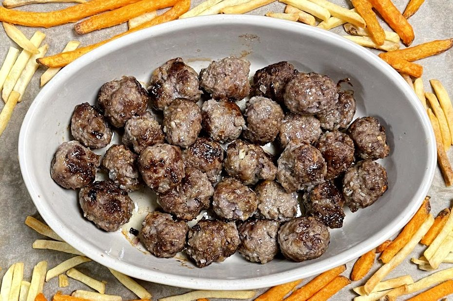

Swedish meatballs
metadata
Created on 2020-12-03
Adapted from IKEA MEATBALLS AT HÖME - MEATBALLS by IKEA UK @ Twitter (2020-12-03)
Recipe should yield this much: 80 small meatballs.
Estimated time needed: At least 2 hours 57 minutes. At most 2 hours 59 minutes.
Ingredients
| 400 | g | beef mince | ||
| 400 | g | pork mince | ||
| 150 | g | onion | 150 g is about 1 medium sized onion. | |
| 100 | g | breadcrumbs | ||
| 85 | g | whole milk | Approximately 3.5 % fat. 1 tbsp is about 17 g. | |
| 50 | g | egg | 1 mid sized egg is about 50 g. | |
| 30 | ml | frying oil | 1 tbsp is about 15 ml. | |
| 15 | g | salt | 1 tsp is about 5 g. | |
| 7 | g | garlic | 7 g is about 1 clove of garlic | |
| 5 | g | pepper | Black. 1 tsp is about 2.5 g. |
Scaling
Timeline
Directions
⌛ Active time 1 minutes
- 150 g onion | 150 g is about 1 medium sized onion.
- 7 g garlic | 7 g is about 1 clove of garlic
Chop vegetables:
Finely chop the onion and garlic.
⌛ Active time 1 minutes
- 400 g beef mince
- 400 g pork mince
Combine minced meat:
Mix with your fingers and break up any lumps.
⌛ Active time 3 minutes
- 100 g breadcrumbs
- 50 g egg | 1 mid sized egg is about 50 g.
Add onion, garlic, breadcrumbs, and eggs and mix:
Mix the onion and garlic you previously chopped up in with the meat together with some breadcrumbs and the egg.
⌛ Active time 1 minutes
- 85 g whole milk | Approximately 3.5 % fat. 1 tbsp is about 17 g.
- 15 g salt | 1 tsp is about 5 g.
- 5 g pepper | Black. 1 tsp is about 2.5 g.
Add milk, salt, and pepper.:
Mix in the milk and generous amounts of salt and pepper.
⌛ Active time 5 minutes
Shape balls:
Shape the meat mixture into small round balls.
⌛ Active time 3 minutes | Passive time 120 minutes
Refridgerate balls:
Chill your balls in the refrigerator for 2 hours. This is so that they better retain their shape during frying. Because they'll be there for a while you'll probably want to cover them so that they don't soak up all that delicious refrigerator taste.
⌛ Active time 1 minutes
Pre-heat oven:
Pre-heat the oven to 160 ℃ convection or 180 ℃ conventional.
⌛ Active time 2 minutes
- 30 ml frying oil | 1 tbsp is about 15 ml.
Heat oil on medium heat:
Get out the frying pan and pre-heat some oil in it.
⌛ Active time 10 minutes
Fry meatballs:
Once the pan is hot, carefully add the meatballs and brown them on all sides.
⌛ Active time 2 minutes | Passive time 30 minutes
Bake fired balls:
Once the meatballs have been browned to your satisfaction, place them in a ovenproof dish and cover them. Put it in the oven, and bake for 30 minutes.